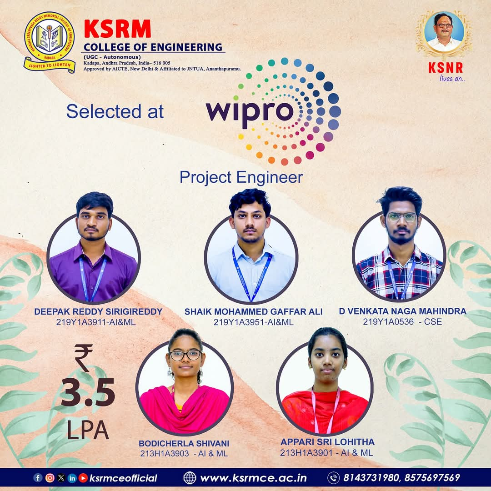

🎉 KSRMCE Students Selected as Project Engineers at Wipro
Company: Wipro Ltd.
Designation: Project Engineer
CTC Offered: ₹3.5 LPA
Five outstanding students from K.S.R.M. College of Engineering, Kadapa, have been successfully placed at Wipro for the role of Project Engineer. Their dedication, technical expertise, and strong foundation in engineering have helped them reach this remarkable milestone.
The selected students, representing various departments, were chosen through a rigorous recruitment process that tested both their academic and practical skills. Their selection showcases not only individual excellence but also the effectiveness of KSRMCE's training programs and placement support.
We heartily congratulate the students and their mentors for this achievement and wish them a bright and successful future in the corporate world.